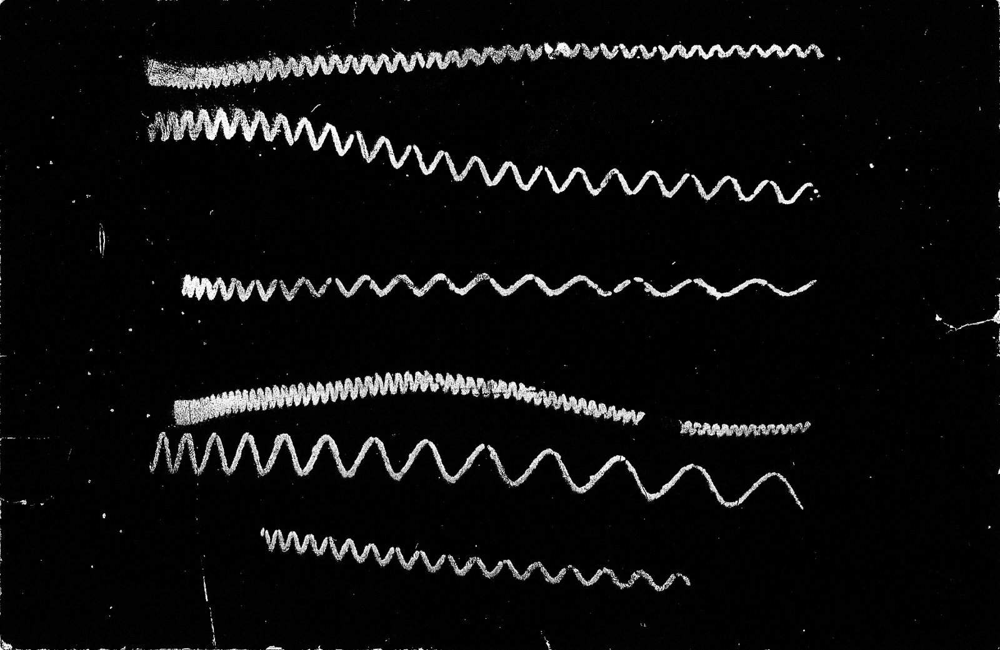
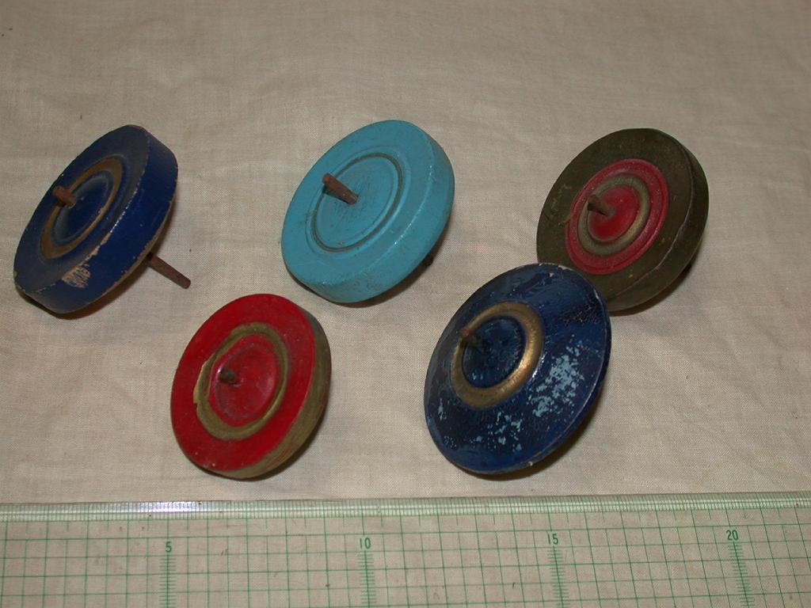
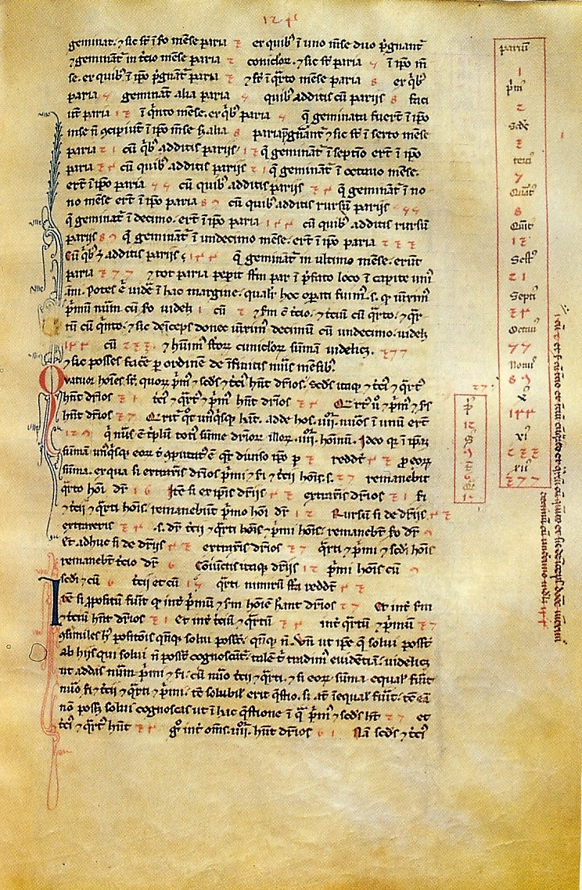

第20回
中心のまわりを、腕が渦を巻いて回っている。
NASA、ESA、ハッブル・ヘリテージ・チーム（2014年、渦巻銀河 M83）／Public domain／Wikimedia Commons（横長に切り出した）
行列は一般のベクトルの向きを変えてしまうが、向きを変えず、長さを数倍するだけの特別な方向がある。その方向と倍率を $A\boldsymbol v=\lambda\boldsymbol v$ と書いて固有ベクトル・固有値と呼ぶ。この回は、それが何を意味するかから出発し、特性方程式での見つけ方、重複度、複素数の固有値、トレース・行列式との関係までを、記号を省かずに1行ずつ追う。
第1回から続く約束どおり、新しい記号は緑色の枠（記号）で「①読み方 ②日本語での意味 ③省略していない書き方 ④どこで出会うか」を書く。この回の中心の省略は「ある数 $\lambda$ とある零でないベクトル $\boldsymbol v$ が存在して…」という長い文を $A\boldsymbol v=\lambda\boldsymbol v$ の一行にしたことなので、1.2 の省略の段階で S0 から S3 まで1段ずつ並べる。以後この箱にリンクして使う。
この回は、第17回の「核・ランク・掃き出し法」と第18回の「行列式」を道具として使う最初の回である。使うたびにリンクを張るので、忘れていても元の説明に戻れる。式変形は1行に1操作だけ進め、理由を右（または下）に書く。すべての計算は数値で一度手を動かしてから文字の式に進む。
なお、行列を固有ベクトルの基底で対角にする話（対角化）は第21回、連立の微分方程式への応用は第31回、数値計算は第50回で扱う。この回では予告だけにする。第18回は並行して作成中なので、そこへのリンクは、その回で付ける記号の名前に合わせてある。
最初に、この回で新しく説明する記号と、前の回で説明済みの記号を分けて並べる。右の列の「→」で説明のある場所へ飛べる。
| 記号 | 読み方 | ざっくりした意味 | 説明 |
|---|---|---|---|
| $\lambda$、$A\boldsymbol v=\lambda\boldsymbol v$（固有値、固有ベクトル） | ラムダ、エー・ブイ・イコール・ラムダ・ブイ | 行列を掛けても向きが変わらないベクトル $\boldsymbol v$ と、その倍率 $\lambda$ | →1.2、→1.2 |
| $E_\lambda$（固有空間） | イー・ラムダ | 固有値 $\lambda$ に属する固有ベクトルの全部と $\boldsymbol 0$ を集めた集まり | →2.2 |
| $\operatorname{tr}A$（トレース） | トレース・エー | 対角成分の和 | →2.2 |
| $p_A(\lambda)$（特性多項式）、特性方程式 | ピー・エー・ラムダ | $\det(\lambda I-A)$。これが $0$ になる $\lambda$ が固有値 | →2.2 |
| 代数的重複度、幾何的重複度 | だいすうてき・ちょうふくど、きかてき・ちょうふくど | 特性多項式の根としての重なりの数／固有空間の次元 | →3.1、→3.1 |
| $i$（虚数単位）、複素数 $a+bi$ | アイ | $i^2=-1$ を満たす数。実数の範囲で解けない方程式の解 | →3.3 |
| 記号 | 意味 | 初出 |
|---|---|---|
| $=$、$:=$ | 等しい／左の名前を右の式で決める | 第1回 2.1、第1回 2.2 |
| $\in$、$\{\ \mid\ \}$（集合の内包表記）、$\mathbb R$ | 要素である／条件で集合を作る／実数全体 | 第2回、第2回、第2回 |
| $\Rightarrow$、$\Leftrightarrow$、$\forall$、$\exists$ | ならば／同値／すべての／存在する | 第2回、第2回、第2回、第2回 |
| $\displaystyle\sum$（総和） | 足し合わせ | 第4回 |
| 太字 $\boldsymbol v$（ベクトル）、成分、$\boldsymbol 0$ | 数の組／その中の数／全成分が0 | 第5回、第5回、第5回 |
| $A\in\mathbb R^{n\times n}$、$A_{ij}$、$I$ | $n$ 行 $n$ 列の行列（正方行列）／成分／単位行列 | 第5回、第5回、第5回 |
| 一次結合、$\operatorname{span}$、一次独立、基底、$\dim$、部分空間 | 定数倍の和／張る空間／冗長がない／座標軸の役目をする組／基底の本数／和とスカラー倍で閉じた集まり | 第15回、第15回、第15回、第15回、第15回、第15回 |
| $A\boldsymbol x$（行列とベクトルの積）、線形写像、$AB$、$A^{-1}$、$A^k$ | 列の一次結合／写像／写像の合成／逆の写像／$k$ 回の繰り返し | 第16回、第16回、第16回、第16回、第16回 |
| 行基本変形、主成分、簡約行階段形、自由変数 | 掃き出し法の3つの操作／各行の最初の0でない成分／階段の形の表／好きな値にしてよい未知数 | 第17回、第17回、第17回、第17回 |
| $\operatorname{rank}A$、$\ker A$、$\dim\ker A$ | 簡約行階段形の主成分の数／$A\boldsymbol x=\boldsymbol 0$ の解全体／その次元 | 第17回、第17回、第17回 |
| $\det A$（行列式）、上三角行列、余因子 | 符号つきの拡大率／対角線より下が0の行列／小行列の行列式に符号をつけた数 | 第18回、第18回、第18回 |
PHOTO 1｜現実

音叉の針が、すすをかぶせたガラス板に、波の形を刻んだ。
Klaus-Dieter Keller（2011年、音叉がすすの膜に刻んだ波形）／CC BY-SA 3.0／Wikimedia Commons（縮小した）
MITATE 1｜見立て

投げ独楽は、軸のまわりを回る。
Keisotyo（Commons の記載による。投げ独楽）／CC BY-SA 3.0／Wikimedia Commons（縮小した）
第16回で、正方行列 $A$ は「平面（空間）のベクトルを別のベクトルに写す」線形写像だと見た。一般のベクトルは、$A$ を掛けると向きも長さも変わる。これでは、$A$ を2回、3回…と繰り返し掛けたとき何が起こるかを追うのが大変である。
ところが、もし「$A$ を掛けても向きが変わらないベクトル」があれば、そのベクトルに $A$ を掛けることはただの数倍と同じになる。数倍なら、何回繰り返しても「倍率を回数分だけ掛ける」だけで済む。複雑な行列の働きを、いちばん簡単な働き（数倍）に分解できるわけである。この「向きを変えない方向」を探すのがこの回の目的である。
最小の具体例：$A=\begin{pmatrix}2&1\\1&2\end{pmatrix}$ に、3つのベクトルを掛けてみる（掛け方は第16回の行列とベクトルの積：各行の成分と $\boldsymbol x$ の成分を掛けて足す）。
① $\boldsymbol e_1=\begin{pmatrix}1\\0\end{pmatrix}$：$A\boldsymbol e_1=\begin{pmatrix}2\cdot1+1\cdot0\\1\cdot1+2\cdot0\end{pmatrix}=\begin{pmatrix}2\\1\end{pmatrix}$。
② $\begin{pmatrix}1\\1\end{pmatrix}$：$A\begin{pmatrix}1\\1\end{pmatrix}=\begin{pmatrix}2\cdot1+1\cdot1\\1\cdot1+2\cdot1\end{pmatrix}=\begin{pmatrix}3\\3\end{pmatrix}=3\begin{pmatrix}1\\1\end{pmatrix}$。
③ $\begin{pmatrix}1\\-1\end{pmatrix}$：$A\begin{pmatrix}1\\-1\end{pmatrix}=\begin{pmatrix}2\cdot1+1\cdot(-1)\\1\cdot1+2\cdot(-1)\end{pmatrix}=\begin{pmatrix}1\\-1\end{pmatrix}=1\cdot\begin{pmatrix}1\\-1\end{pmatrix}$。
図1.1 は、この3つを並べたものである。②と③のベクトルが、$A$ に押されても「自分の直線の上」にとどまっている。
「向きが変わらない」を式にする。ベクトル $\boldsymbol v$ に $A$ を掛けた $A\boldsymbol v$ が、$\boldsymbol v$ の定数倍になっている、ということである。その定数を $\lambda$（ギリシャ文字ラムダ）と書く。
①読み方：$A\boldsymbol v=\lambda\boldsymbol v$ は「エー・ブイ・イコール・ラムダ・ブイ」。$\lambda$ は「ラムダ」、日本語で「固有値（こゆうち）」。$\boldsymbol v$ は「固有ベクトル（こゆう・ベクトル）」。英語では eigenvalue, eigenvector（eigen はドイツ語で「固有の」）。
②日本語での意味：正方行列 $A$ を掛けても向きが変わらない（反対向きになるのと、$\boldsymbol 0$ につぶれるのは許す）零でないベクトルが固有ベクトル $\boldsymbol v$。そのとき長さが何倍（負なら向きが反転）になるかが固有値 $\lambda$。
③省略していない書き方：$A\in\mathbb R^{n\times n}$ とする。次の2つを両方満たす実数 $\lambda\in\mathbb R$ とベクトル $\boldsymbol v\in\mathbb R^n$ の組を考える。
このとき $\lambda$ を $A$ の固有値、$\boldsymbol v$ を固有値 $\lambda$ に属する固有ベクトル、組 $(\lambda,\boldsymbol v)$ を固有対という。（$\lambda$ に複素数を許す拡張は3.3。）
④どこで出会うか：対角化（第21回）、二次形式・正定値（第21回）、特異値分解（第22回）、連立微分方程式（第31回）、振動の固有振動数（機械力学）、主成分分析・最適化の曲がり具合の調べ方（研究室）。
(E1) の「$\boldsymbol v\neq\boldsymbol 0$」を落としてはいけない。$\boldsymbol v=\boldsymbol 0$ なら、どんな $\lambda$ でも $A\boldsymbol 0=\boldsymbol 0=\lambda\boldsymbol 0$ が成り立ってしまい、「どの数も固有値」になって意味を失う。一方、$\lambda=0$ は許される：$A\boldsymbol v=0\cdot\boldsymbol v=\boldsymbol 0$ は「$\boldsymbol v$ が $\ker A$ の零でない元」という意味で、$A$ が $\boldsymbol v$ をつぶす場合である。
| 段 | 書き方 | この段で省いたもの | 省いても誤解が起きない理由 |
|---|---|---|---|
| S0 | 「ある実数 $\lambda$ とある零でないベクトル $\boldsymbol v$ が存在して、$A$ と $\boldsymbol v$ の積が、$\lambda$ と $\boldsymbol v$ のスカラー倍に等しい」 | （なし） | — |
| S1 | $\exists\,\lambda\in\mathbb R,\ \exists\,\boldsymbol v\in\mathbb R^n\setminus\{\boldsymbol 0\}\colon\ A\boldsymbol v=\lambda\boldsymbol v$（$\setminus$ は「…を除く」、$\exists$ は「存在する」） | 「ある」「存在して」「積」「スカラー倍」という言葉 | $\exists$ と $\colon$ が、日本語の「存在して…」と同じ働きをする。積は第16回の約束に決まっている |
| S2 | $A\boldsymbol v=\lambda\boldsymbol v$（ただし $\boldsymbol v\neq\boldsymbol 0$） | $\exists$ と $\in\mathbb R,\ \mathbb R^n$、$\setminus\{\boldsymbol 0\}$ の部分を「ただし」書きに移した | $A$ が $n\times n$ のとき $\boldsymbol v\in\mathbb R^n$ でなければ積が定義できない。$\lambda$ が1つの数であることは、$\lambda$ が太字でないことで分かる |
| S3 | $(\lambda,\boldsymbol v)$ は $A$ の固有対 | 式そのものを「固有対」という名前にまとめた | 名前から S2 に戻れる。使うときは必ず「$\boldsymbol v\neq\boldsymbol 0$」を覚えておく（S3 でも省けない条件） |
落とし穴：S2 で「ただし $\boldsymbol v\neq\boldsymbol 0$」を書き忘れた式を見かけたら、頭の中で補う。この条件を省くと、定義が空っぽになる。
確かめ：1.1 の ② は $A\boldsymbol v=3\boldsymbol v$ なので、$(\lambda,\boldsymbol v)=\left(3,\begin{pmatrix}1\\1\end{pmatrix}\right)$ は固有対。③ は $A\boldsymbol v=1\cdot\boldsymbol v$ なので $\left(1,\begin{pmatrix}1\\-1\end{pmatrix}\right)$ も固有対。① の $\boldsymbol e_1$ は $A\boldsymbol e_1=(2,1)^{\mathsf T}$ が $(1,0)^{\mathsf T}$ の定数倍ではない（下の成分が $0$ のベクトルを何倍しても下は $0$ のまま、なのに $1\neq0$）ので、固有ベクトルではない。
$A\boldsymbol v=\lambda\boldsymbol v$ の $\lambda$ の値によって、$\boldsymbol v$ に起きることが決まる。図1.3 に4つの場合を描く。
固有ベクトルは1つに決まらない。$\boldsymbol v$ が固有値 $\lambda$ の固有ベクトルなら、$0$ でない定数 $c$ に対して $c\boldsymbol v$ もそうである。理由を1行ずつ書く。
① $A(c\boldsymbol v)=c\,(A\boldsymbol v)$。
② $c\,(A\boldsymbol v)=c\,(\lambda\boldsymbol v)$。
③ $c\,(\lambda\boldsymbol v)=\lambda\,(c\boldsymbol v)$。
④ よって $A(c\boldsymbol v)=\lambda(c\boldsymbol v)$ で、$c\boldsymbol v\neq\boldsymbol 0$（$c\neq0$、$\boldsymbol v\neq\boldsymbol 0$）だから、$c\boldsymbol v$ も固有値 $\lambda$ の固有ベクトル。
だから「固有ベクトルは、原点を通る直線（方向）」と思うのが正しい。1.1 の例では、直線 $y=x$ の上の零でない点はすべて固有値 $3$ の固有ベクトル、直線 $y=-x$ の上の零でない点はすべて固有値 $1$ の固有ベクトルである。
固有ベクトルの意味を、平面全体の変形として見ておく。半径 $1$ の円周上のすべての点に $A=\begin{pmatrix}2&1\\1&2\end{pmatrix}$ を掛けると、点の集まりは楕円になる。図1.4 のとおり、楕円の長い軸の方向が固有ベクトル $(1,1)$ で（倍率 $3$）、短い軸の方向が固有ベクトル $(1,-1)$ である（倍率 $1$）。
「固有ベクトルの方向が、いつも楕円の軸になる」は誤りである。図1.4 で軸に一致したのは、$A$ が対称行列（$A_{ij}=A_{ji}$）だったからで、これは第21回で証明する特別な性質である。対称でない行列では、固有ベクトルの方向は存在しても、楕円の軸とは別の方向になる。ここでは「固有ベクトルは向きを変えない方向」だけを覚えておけばよい。
$A\boldsymbol v=\lambda\boldsymbol v$ は、$A$ が分かっているとき、未知の $\lambda$ と未知の $\boldsymbol v$ の両方を求める式である。しかも右辺は「$\lambda$ 掛ける $\boldsymbol v$」で、2つの未知数が掛け算になっている。第17回の連立一次方程式のようには、そのまま掃き出せない。そこで、先に $\lambda$ だけを決め、そのあと $\boldsymbol v$ を求める。$\lambda$ が決まれば $\boldsymbol v$ については一次の式になり、第17回の掃き出し法が使える。
図2.1 に、これから行う論理の流れを描く。1つ1つの矢印を、理由つきで確かめる。
導出：ある $\lambda$ と $\boldsymbol v\neq\boldsymbol 0$ について $A\boldsymbol v=\lambda\boldsymbol v$ が成り立つとする。
① $A\boldsymbol v=\lambda\boldsymbol v$。
② $A\boldsymbol v=\lambda I\boldsymbol v$。
③ $A\boldsymbol v-\lambda I\boldsymbol v=\boldsymbol 0$。
④ $(A-\lambda I)\boldsymbol v=\boldsymbol 0$。
⑤ これは、行列 $A-\lambda I$ を係数とする斉次方程式（右辺が $\boldsymbol 0$）である。「$\boldsymbol 0$ でない解 $\boldsymbol v$ がある」とは、$\ker(A-\lambda I)$ が $\{\boldsymbol 0\}$ より大きい、ということ。
⑥ 第17回の定理6.1（$n\times n$ 行列の同値条件）より、「$\ker M\neq\{\boldsymbol 0\}$」と「$M$ は逆行列をもたない」と「$\operatorname{rank}M\lt n$」は同じ。ここで $M:=A-\lambda I$。
⑦ 第18回より、「$M$ は逆行列をもたない」と「$\det M=0$」は同じ。
⑧ まとめると：$\lambda$ が $A$ の固有値 $\Longleftrightarrow\ \det(A-\lambda I)=0$。
⑧ の「$\Leftarrow$」（右から左）も成り立つ理由：$\det(A-\lambda I)=0$ なら ⑦⑥ をさかのぼって $\ker(A-\lambda I)\neq\{\boldsymbol 0\}$ なので、零でない $\boldsymbol v$ が取れ、③④ をさかのぼれば $A\boldsymbol v=\lambda\boldsymbol v$ となる。すべての矢印が両向きなので、同値と言える。
①読み方：$p_A(\lambda)$ は「ピー・エー・ラムダ」。日本語で「特性多項式（とくせいたこうしき）」。$p_A(\lambda)=0$ を「特性方程式」という。
②日本語での意味：行列 $A$ の対角成分から $\lambda$ を引いた行列の行列式を、変数 $\lambda$ の式と見たもの（符号をそろえて最高次の係数を $1$ にしてある）。この式の根（$p_A(\lambda)=0$ の解）が固有値。
③省略していない書き方：$A\in\mathbb R^{n\times n}$ に対して、
$$ p_A(\lambda):=\det(\lambda I-A) $$これは $\lambda$ の $n$ 次式で、最高次の項は $\lambda^n$（係数 $1$）。2.2 の ⑧ の $\det(A-\lambda I)$ との関係は、$A-\lambda I$ の各行を $-1$ 倍すると $\lambda I-A$ になり、行を $-1$ 倍するたびに行列式は $-1$ 倍になる（第18回の行についての線形性）ので、$n$ 行すべてで $\det(A-\lambda I)=(-1)^n p_A(\lambda)$。$0$ と比べる限り符号は関係ないので、固有値はどちらで計算しても同じ。
④どこで出会うか：固有値の計算（この回以降すべて）、2階線形微分方程式の特性方程式（第29回、同じ形）、ケーリー・ハミルトンの定理（研究室）。
教科書によって、特性多項式を $\det(\lambda I-A)$ と書く本と $\det(A-\lambda I)$ と書く本がある。両者は $(-1)^n$ 倍だけ違い、$=0$ の解（固有値）は同じである。この教材では、最高次の係数が $+1$ になる $\det(\lambda I-A)$ を $p_A(\lambda)$ と定め、「$A-\lambda I$ の核」という導出の途中の形は 2.2 のとおり $\det(A-\lambda I)$ と書く。
①読み方：「トレース・エー」。日本語で「対角和（たいかくわ）」。
②日本語での意味：正方行列の左上から右下への対角成分をすべて足した数。
③省略していない書き方：$A\in\mathbb R^{n\times n}$ に対して $\operatorname{tr}A:=A_{11}+A_{22}+\cdots+A_{nn}=\displaystyle\sum_{i=1}^{n}A_{ii}$（第4回の総和）。
④どこで出会うか：固有値の和の検算（4.1）、行列の指数関数（第31回）、統計（共分散行列の総分散）。
$2\times2$ の場合の公式：$A=\begin{pmatrix}a&b\\c&d\end{pmatrix}$ のとき、$\lambda I-A=\begin{pmatrix}\lambda-a&-b\\-c&\lambda-d\end{pmatrix}$。
① $p_A(\lambda)=\det\begin{pmatrix}\lambda-a&-b\\-c&\lambda-d\end{pmatrix}$。
② $=(\lambda-a)(\lambda-d)-(-b)(-c)$。
③ $=\lambda^2-a\lambda-d\lambda+ad-bc$。
④ $=\lambda^2-(a+d)\lambda+(ad-bc)$。
⑤ $a+d=\operatorname{tr}A$、$ad-bc=\det A$ だから、
$$ p_A(\lambda)=\lambda^2-(\operatorname{tr}A)\,\lambda+\det A\qquad(2\times2). $$これが「2×2 の特性方程式は、トレースと行列式だけで書ける」という公式である。
最小の具体例：1.1 の $A=\begin{pmatrix}2&1\\1&2\end{pmatrix}$。
① $\operatorname{tr}A=2+2=4$、$\det A=2\cdot2-1\cdot1=3$。
② $p_A(\lambda)=\lambda^2-4\lambda+3$。
③ $\lambda^2-4\lambda+3=(\lambda-1)(\lambda-3)$。
④ $p_A(\lambda)=0$ より $\lambda=1,\ 3$。
1.1 で見つけた 3 と 1 に一致する。図2.2 は $p_A(\lambda)$ のグラフで、横軸と交わる点が固有値である。
①読み方：「イー・ラムダ」。日本語で「固有空間（こゆうくうかん）」。
②日本語での意味：固有値 $\lambda$ に属する固有ベクトルをすべて集め、零ベクトルも加えた集まり。零ベクトルを加えるのは、集まりを部分空間にするため。
③省略していない書き方：$E_\lambda:=\{\boldsymbol v\in\mathbb R^n\mid A\boldsymbol v=\lambda\boldsymbol v\}=\ker(A-\lambda I)$（内包表記。2つ目の等号は 2.2 の ①〜④）。$A$ を明記したいときは $E_\lambda(A)$。$\ker$ なので部分空間であり、$\dim E_\lambda$ が決まる。
④どこで出会うか：固有ベクトルの基底（2.3）、幾何的重複度（3.1）、対角化（第21回）。
固有値が分かったら、$\lambda$ のそれぞれについて $(A-\lambda I)\boldsymbol v=\boldsymbol 0$ を掃き出し法で解く。右辺が $\boldsymbol 0$ なので、拡大係数行列の右の列は $0$ のままで変わらない。以後、右の列を書かず、左の $A-\lambda I$ だけ変形する。
$A=\begin{pmatrix}2&1\\1&2\end{pmatrix}$、$\lambda=3$ の場合：
① $A-3I=\begin{pmatrix}2-3&1\\1&2-3\end{pmatrix}=\begin{pmatrix}-1&1\\1&-1\end{pmatrix}$。
② $R_2\leftarrow R_2+R_1$：$(1,-1)+(-1,1)=(0,0)$。 $\begin{pmatrix}-1&1\\0&0\end{pmatrix}$。
③ $R_1\leftarrow(-1)R_1$：$\begin{pmatrix}1&-1\\0&0\end{pmatrix}$。
④ 主成分は1列目だけ。2列目は自由変数：$v_2=s$（$s$ は任意の実数）。第1行は $v_1-v_2=0$ だから $v_1=s$。
⑤ $\boldsymbol v=\begin{pmatrix}s\\s\end{pmatrix}=s\begin{pmatrix}1\\1\end{pmatrix}$。
$\lambda=1$ の場合：
① $A-1\cdot I=\begin{pmatrix}1&1\\1&1\end{pmatrix}$。 ② $R_2\leftarrow R_2-R_1$：$(0,0)$。 $\begin{pmatrix}1&1\\0&0\end{pmatrix}$。
③ 自由変数 $v_2=s$、第1行 $v_1+v_2=0$ より $v_1=-s$。 ④ $\boldsymbol v=s\begin{pmatrix}-1\\1\end{pmatrix}$。$s=-1$ とすれば $(1,-1)^{\mathsf T}$。$E_1=\operatorname{span}\{(1,-1)^{\mathsf T}\}$。
確かめ：$A(1,1)^{\mathsf T}=(3,3)^{\mathsf T}=3(1,1)^{\mathsf T}$ ✓（1.1 の②）、$A(1,-1)^{\mathsf T}=(1,-1)^{\mathsf T}$ ✓（1.1 の③）。
確かめ（行が消えるか）：$\lambda$ が本当に固有値なら、$A-\lambda I$ を掃き出すと必ず零の行が現れる（$\operatorname{rank}\lt n$ だから）。零の行が出なければ、$\lambda$ の計算か引き算の間違いである。固有値の検算として使える。
図2.4 は、2つの固有空間を平面に描いたものである。
$B=\begin{pmatrix}2&1&0\\1&2&0\\0&0&3\end{pmatrix}$。
① $\lambda I-B=\begin{pmatrix}\lambda-2&-1&0\\-1&\lambda-2&0\\0&0&\lambda-3\end{pmatrix}$。
② 第3行で余因子展開する（第18回の余因子）。第3行は $(3,3)$ 成分 $\lambda-3$ 以外が $0$。符号 $(-1)^{3+3}=+1$。小行列は左上の $2\times2$。 $p_B(\lambda)=(\lambda-3)\det\begin{pmatrix}\lambda-2&-1\\-1&\lambda-2\end{pmatrix}$。
③ $\det\begin{pmatrix}\lambda-2&-1\\-1&\lambda-2\end{pmatrix}=(\lambda-2)^2-1$。
④ $(\lambda-2)^2-1=\bigl((\lambda-2)-1\bigr)\bigl((\lambda-2)+1\bigr)=(\lambda-3)(\lambda-1)$。
⑤ $p_B(\lambda)=(\lambda-3)\cdot(\lambda-3)(\lambda-1)=(\lambda-3)^2(\lambda-1)$。
⑥ 固有値は $\lambda=3$（2回現れる）と $\lambda=1$。
$\lambda=3$：① $B-3I=\begin{pmatrix}-1&1&0\\1&-1&0\\0&0&0\end{pmatrix}$。 ② $R_2\leftarrow R_2+R_1$：$(0,0,0)$。 ③ $R_1\leftarrow(-1)R_1$：$\begin{pmatrix}1&-1&0\\0&0&0\\0&0&0\end{pmatrix}$。主成分は1列目だけ。
④ 自由変数は $v_2=s$、$v_3=u$。第1行 $v_1-v_2=0$ より $v_1=s$。 ⑤ $\boldsymbol v=s\begin{pmatrix}1\\1\\0\end{pmatrix}+u\begin{pmatrix}0\\0\\1\end{pmatrix}$。自由変数が2つなので、固有空間は平面：$\dim E_3=2$。
$\lambda=1$：① $B-I=\begin{pmatrix}1&1&0\\1&1&0\\0&0&2\end{pmatrix}$。 ② $R_2\leftarrow R_2-R_1$：$(0,0,0)$。 ③ $R_3\leftarrow\frac12R_3$：$(0,0,1)$。 $\begin{pmatrix}1&1&0\\0&0&1\\0&0&0\end{pmatrix}$。 ④ 主成分は1列目と3列目。自由変数は $v_2=s$、第1行より $v_1=-s$、第2行より $v_3=0$。 ⑤ $\boldsymbol v=s(-1,1,0)^{\mathsf T}$。$\dim E_1=1$。
図2.5 は、3次元空間の中の、平面 $E_3$ と直線 $E_1$ である。
PHOTO 2｜現実
中心から腕をのばして、渦を巻く、棒渦巻銀河である。
NASA、ESA、ハッブル・ヘリテージ・チーム（2004年、棒渦巻銀河 NGC 1300）／Public domain／Wikimedia Commons（縮小した）
2.4 の $B$ では、$\lambda=3$ が特性多項式の根として「2回」現れ、かつ固有空間 $E_3$ も2次元だった。この2つの「2」は別の量であり、一致しないことがある。それぞれに名前をつける。
①読み方：「だいすうてき・ちょうふくど」。英語で algebraic multiplicity。
②日本語での意味：特性多項式 $p_A(\lambda)$ を一次式の積に分解したとき、$(\lambda-\lambda_0)$ が何回掛かっているか。
③省略していない書き方：$\lambda_0$ が $A$ の固有値のとき、$p_A(\lambda)$ が $(\lambda-\lambda_0)^m$ で割り切れ、$(\lambda-\lambda_0)^{m+1}$ では割り切れないような自然数 $m$ を、$\lambda_0$ の代数的重複度という。
④どこで出会うか：対角化できるかの判定（第21回）、2階線形微分方程式の重根（第29回）。
①読み方：「きかてき・ちょうふくど」。英語で geometric multiplicity。
②日本語での意味：固有値 $\lambda_0$ に属する固有ベクトルが、何本まで一次独立にとれるか（固有空間の次元）。
③省略していない書き方：$\dim E_{\lambda_0}=\dim\ker(A-\lambda_0I)=n-\operatorname{rank}(A-\lambda_0I)$。最後の等号は第17回の次元定理（零度 $=n-\operatorname{rank}$）。
④どこで出会うか：同上。
2.4 の $B$：$\lambda=3$ は、代数的重複度 $2$（$(\lambda-3)^2$）、幾何的重複度 $\dim E_3=2$。$\lambda=1$ は、代数的重複度 $1$、幾何的重複度 $1$。
両者が食い違う例（せん断）：$S=\begin{pmatrix}1&1\\0&1\end{pmatrix}$。
① $\operatorname{tr}S=2$、$\det S=1\cdot1-1\cdot0=1$。
② $p_S(\lambda)=\lambda^2-2\lambda+1=(\lambda-1)^2$。
③ 固有値は $\lambda=1$ だけ。代数的重複度は 2。
④ $S-1\cdot I=\begin{pmatrix}0&1\\0&0\end{pmatrix}$。この行列は既に簡約行階段形。主成分は2列目の1つだけ。
⑤ 自由変数は1列目 $v_1=s$。第1行は $v_2=0$。 $\boldsymbol v=s\begin{pmatrix}1\\0\end{pmatrix}$。$\dim E_1=1$。幾何的重複度は 1。
固有値 $1$ は2重の根なのに、一次独立な固有ベクトルは $(1,0)^{\mathsf T}$ の1本しかとれない。図3.1 は、この $S$ が平面をどう変形するかである。
$\lambda_0$ が $A$ の固有値のとき、
$$ 1\ \le\ (\text{幾何的重複度})\ \le\ (\text{代数的重複度}). $$$\lambda_0$ が固有値なら、定義より零でない $\boldsymbol v$ で $A\boldsymbol v=\lambda_0\boldsymbol v$ となるものがある。$\boldsymbol v\in E_{\lambda_0}$ だから $E_{\lambda_0}\neq\{\boldsymbol 0\}$、すなわち $\dim E_{\lambda_0}\ge1$。□
右の不等号 $\dim E_{\lambda_0}\le(\text{代数的重複度})$ は、固有空間の基底 $\boldsymbol v_1,\dots,\boldsymbol v_g$（$g:=\dim E_{\lambda_0}$）を含む $\mathbb R^n$ の基底をとり、その基底で $A$ を表す行列を書くと、左上が $\lambda_0I_g$ となる形になり、特性多項式が $(\lambda-\lambda_0)^g$ で割り切れる、という議論で示される。「基底を取り替えて行列を表し直す」ことは第21回（対角化・相似）で定義するので、この回では証明なしで認めて使う。図3.2 の2つの例（単位行列とせん断）で、等号になる場合とならない場合を確かめておく。
平面を原点のまわりに $90^\circ$ 回す行列 $R=\begin{pmatrix}0&-1\\1&0\end{pmatrix}$（第16回の回転行列の $\theta=90^\circ$）を考える。
回転はすべてのベクトルの向きを変えるから、実数の範囲では「向きが変わらないベクトル」はない。実際、計算してもそうなる。
① $\operatorname{tr}R=0+0=0$、$\det R=0\cdot0-(-1)\cdot1=1$。
② $p_R(\lambda)=\lambda^2-0\cdot\lambda+1=\lambda^2+1$。
③ $\lambda^2+1=0$ は $\lambda^2=-1$。実数の2乗は $0$ 以上なので、実数の解はない。
図3.3 は、$R$ が $(1,0)$ や $(1,1)$ を回す様子と、$p_R$ のグラフが横軸と交わらないことを示す。
$p_A(\lambda)=0$ が $2$ 次式のとき、根の現れ方は3通りしかなく、判別式 $D:=(\operatorname{tr}A)^2-4\det A$ の符号で決まる。図3.4 のとおり、$D\gt0$ で相異なる2つの実数解、$D=0$ で重解（3.1 で見たせん断はこれ）、$D\lt0$ で実数解なしである。
実数の解がなくても、$\lambda^2=-1$ を満たす新しい数 $i$ を導入すれば、方程式は解ける。
①読み方：「アイ」。日本語で「虚数単位（きょすうたんい）」。工学では $j$ と書く流儀もある（電気回路で $i$ が電流に使われるため）。
②日本語での意味：2乗すると $-1$ になる数。実数の範囲にそんな数はないので、新しく作る。$a+bi$（$a,b$ は実数）の形の数を複素数という。
③省略していない書き方：$i^2:=-1$。複素数どうしの足し算・掛け算は、$i$ を文字として普通に計算し、$i^2$ が現れたら $-1$ に置き換える。例：$(1+i)(1-i)=1-i+i-i^2=1-(-1)=2$。
④どこで出会うか：この回の複素固有値、2階線形微分方程式の振動解（第29回）、複素数とオイラーの公式（第34回）、フーリエ解析（第5部）。この教材では複素数の詳しい性質は第34回でまとめて扱う。ここでは上の計算規則だけを使う。
$\lambda^2+1=0$ の解は $\lambda=i$ と $\lambda=-i$（$i^2=-1$、$(-i)^2=(-1)^2i^2=-1$ だから）。実行列 $R$ が、固有値 $\pm i$ という複素数をもつわけである。
固有ベクトルは成分に複素数を許して探す。$\lambda=i$：
① $R-iI=\begin{pmatrix}0-i&-1\\1&0-i\end{pmatrix}=\begin{pmatrix}-i&-1\\1&-i\end{pmatrix}$。
② 第1行の式：$-i\,v_1-v_2=0$ より $v_2=-i\,v_1$。
③ $v_1=1$ とすると $v_2=-i$。固有ベクトル $\begin{pmatrix}1\\-i\end{pmatrix}$。
④ 確かめ：第2行の式 $1\cdot v_1+(-i)v_2=1+(-i)(-i)=1+i^2=1-1=0$ ✓。$R\begin{pmatrix}1\\-i\end{pmatrix}=\begin{pmatrix}0\cdot1-1\cdot(-i)\\1\cdot1+0\cdot(-i)\end{pmatrix}=\begin{pmatrix}i\\1\end{pmatrix}$、一方 $i\begin{pmatrix}1\\-i\end{pmatrix}=\begin{pmatrix}i\\-i^2\end{pmatrix}=\begin{pmatrix}i\\1\end{pmatrix}$ ✓。
同じ計算を $\lambda=-i$ で行うと、固有ベクトル $(1,i)^{\mathsf T}$ が得られる。
これまでの話（特性方程式、重複度、固有空間）は、$\mathbb R$ を複素数に取り替えても、そのまま成り立つ。$\lambda$ が複素数で $\boldsymbol v$ の成分も複素数であることを許すのが、固有値問題の標準的な設定である。複素数の固有値をもつ実行列については、次のことが成り立つ。
$A$ が実行列で、$\lambda=a+bi$（$b\neq0$）が固有値なら、$a-bi$ も固有値である。
$A$ の成分が実数なので、特性多項式 $p_A(\lambda)$ の係数は実数。実数係数の多項式 $p$ について、$p(a+bi)=0$ なら $p(a-bi)=0$（$i$ を $-i$ に置き換えても、各項の計算が実数係数のまま保たれるため。複素共役の性質で、第34回で証明する）。□
例：$R$ の固有値 $i,-i$ は対になっている。振動する現象（バネ・回転）は、複素固有値と対応する。これは第29回で再会する。
2×2 の特性多項式を、固有値 $\lambda_1,\lambda_2$ を使った因数分解の形でも書く。
① $p_A(\lambda)=(\lambda-\lambda_1)(\lambda-\lambda_2)$。
② $=\lambda^2-(\lambda_1+\lambda_2)\lambda+\lambda_1\lambda_2$。
③ 一方、2.2 で $p_A(\lambda)=\lambda^2-(\operatorname{tr}A)\lambda+\det A$ を導いた。
④ 2つの $\lambda^2$ の多項式が、すべての $\lambda$ で等しいなら、係数が等しい。
⑤ よって $\lambda_1+\lambda_2=\operatorname{tr}A$、$\lambda_1\lambda_2=\det A$。
$A\in\mathbb R^{n\times n}$ の固有値を、重複度の数だけ重ねて（複素数も含めて）$\lambda_1,\dots,\lambda_n$ と並べると、
$$ \lambda_1+\lambda_2+\cdots+\lambda_n=\operatorname{tr}A,\qquad \lambda_1\lambda_2\cdots\lambda_n=\det A. $$$n=2$ は上の ①〜⑤ で示した。一般の $n$ のうち、積は次のように示せる：$p_A(\lambda)=\prod_{k=1}^{n}(\lambda-\lambda_k)$ に $\lambda=0$ を代入すると、左辺は $\det(0\cdot I-A)=\det(-A)$、右辺は $\prod(-\lambda_k)=(-1)^n\lambda_1\cdots\lambda_n$。$\det(-A)=(-1)^n\det A$（各行を $-1$ 倍するたびに $\det$ が $-1$ 倍になる）なので、両辺の $(-1)^n$ を消して $\det A=\lambda_1\cdots\lambda_n$。和については、$\lambda^{n-1}$ の係数の比較で $\operatorname{tr}A$ が出る。$n=3$ 以上の証明は行列式の展開をもう少し使うので、この回では認めて使う（$n=2$ の確認と、直後の数値例で信用してよい）。
数値で確かめ：1.1 の $A$ は固有値 $3,1$、和 $=4=\operatorname{tr}A$（$2+2$）、積 $=3=\det A$ ✓。2.4 の $B$ は固有値 $3,3,1$、和 $=7$、$\operatorname{tr}B=2+2+3=7$ ✓。積 $=9$、$\det B=3\cdot(2\cdot2-1\cdot1)=9$ ✓。$R$ は固有値 $i,-i$、和 $=0=\operatorname{tr}R$、積 $=i\cdot(-i)=-i^2=1=\det R$ ✓。
使い道は2つある。検算（計算した固有値の和がトレース、積が行列式と合うか）と、$A$ が逆行列をもつかの判定である：$\det A=\lambda_1\cdots\lambda_n$ なので、固有値の中に $0$ があることと $\det A=0$ は同じ。
上三角行列（対角線より下が全部 $0$）なら、固有値を計算しなくても読める。
① $A$ が上三角で、対角成分が $d_1,\dots,d_n$ のとき、$\lambda I-A$ も上三角で、対角成分は $\lambda-d_1,\dots,\lambda-d_n$。
② 上三角行列の行列式は対角成分の積（第18回）。よって $p_A(\lambda)=(\lambda-d_1)(\lambda-d_2)\cdots(\lambda-d_n)$。
③ 固有値は $d_1,\dots,d_n$。
例：$C=\begin{pmatrix}2&5&7\\0&3&4\\0&0&-1\end{pmatrix}$ の固有値は $2,3,-1$。上三角の外の成分 $5,7,4$ は固有値に関係しないが、固有ベクトルには関係する。
$(\lambda,\boldsymbol v)$ が $A$ の固有対とする。
(1) $k=2$：① $A^2\boldsymbol v=A(A\boldsymbol v)$。 ② $=A(\lambda\boldsymbol v)$。 ③ $=\lambda(A\boldsymbol v)$。 ④ $=\lambda(\lambda\boldsymbol v)=\lambda^2\boldsymbol v$。 。$k=3$ なら、$A^3\boldsymbol v=A(A^2\boldsymbol v)=A(\lambda^2\boldsymbol v)=\lambda^2(A\boldsymbol v)=\lambda^3\boldsymbol v$。これを $k$ ごとに繰り返す（$k=0$ は $A^0=I$ で $I\boldsymbol v=\boldsymbol v=\lambda^0\boldsymbol v$）。
(2) $\lambda=0$ とすると $A\boldsymbol v=\boldsymbol 0$、$\boldsymbol v\neq\boldsymbol 0$ で $\boldsymbol v\in\ker A$ だが、$A$ が逆行列をもつなら 第17回の定理6.1 より $\ker A=\{\boldsymbol 0\}$ で矛盾。ゆえに $\lambda\neq0$。① $A\boldsymbol v=\lambda\boldsymbol v$ の両辺に左から $A^{-1}$ を掛ける：$A^{-1}A\boldsymbol v=\lambda A^{-1}\boldsymbol v$、左辺は $I\boldsymbol v=\boldsymbol v$。 ② $\boldsymbol v=\lambda A^{-1}\boldsymbol v$。 ③ 両辺を $\lambda\neq0$ で割る：$A^{-1}\boldsymbol v=\lambda^{-1}\boldsymbol v$。□
(3) $(A+cI)\boldsymbol v=A\boldsymbol v+cI\boldsymbol v=\lambda\boldsymbol v+c\boldsymbol v=(\lambda+c)\boldsymbol v$。$(cA)\boldsymbol v=c(A\boldsymbol v)=c\lambda\boldsymbol v$。□
数値で確かめ：$A=\begin{pmatrix}2&1\\1&2\end{pmatrix}$、$\boldsymbol v=(1,1)^{\mathsf T}$（$\lambda=3$）。$A^2=\begin{pmatrix}5&4\\4&5\end{pmatrix}$、$A^2\boldsymbol v=(9,9)^{\mathsf T}=9\boldsymbol v=3^2\boldsymbol v$ ✓。$A^{-1}=\frac13\begin{pmatrix}2&-1\\-1&2\end{pmatrix}$、$A^{-1}\boldsymbol v=\frac13(1,1)^{\mathsf T}=\frac13\boldsymbol v$ ✓。$(A+5I)\boldsymbol v=\begin{pmatrix}7&1\\1&7\end{pmatrix}(1,1)^{\mathsf T}=(8,8)^{\mathsf T}=8\boldsymbol v=(3+5)\boldsymbol v$ ✓。
「$A$ を行基本変形（掃き出し）しても固有値は変わらない」は誤り。例：$A=\begin{pmatrix}2&1\\1&2\end{pmatrix}$ の固有値は $3,1$ だが、これを掃き出すと簡約行階段形 $I$ になり、$I$ の固有値は $1,1$。掃き出しは「連立方程式の解」を変えない操作であって、「ベクトルの向きを変えない方向」を保つ操作ではない。固有値は、$\det(\lambda I-A)$ を$A$ そのものに対して計算する。
$\lambda_1,\dots,\lambda_m$ が互いに異なる固有値で、$\boldsymbol v_1,\dots,\boldsymbol v_m$ がそれぞれに属する固有ベクトルなら、$\boldsymbol v_1,\dots,\boldsymbol v_m$ は一次独立。
$c_1\boldsymbol v_1+c_2\boldsymbol v_2=\boldsymbol 0$ とする。$c_1=c_2=0$ を示せばよい（一次独立の定義）。
① 両辺に左から $A$ を掛ける：$c_1\lambda_1\boldsymbol v_1+c_2\lambda_2\boldsymbol v_2=\boldsymbol 0$。
② 元の式を $\lambda_2$ 倍する：$c_1\lambda_2\boldsymbol v_1+c_2\lambda_2\boldsymbol v_2=\boldsymbol 0$。
③ ① から ② を引く：$c_1(\lambda_1-\lambda_2)\boldsymbol v_1=\boldsymbol 0$。
④ $\boldsymbol v_1\neq\boldsymbol 0$、$\lambda_1-\lambda_2\neq0$ だから $c_1=0$。
⑤ 元の式に戻す：$c_2\boldsymbol v_2=\boldsymbol 0$、$\boldsymbol v_2\neq\boldsymbol 0$ だから $c_2=0$。□
一般の $m$ は、$m-1$ 本までを仮定して同じ手順を繰り返す（数学的帰納法）。
この定理により、$n\times n$ の行列が$n$ 個の異なる固有値をもてば、$n$ 本の一次独立な固有ベクトルが手に入る（$n$ 本の独立なベクトルは $\mathbb R^n$ の基底）。この「固有ベクトルで作った基底」が、第21回の対角化の材料になる。
PHOTO 3｜現実

フィボナッチ『算盤の書』の写本の一頁である。
フィボナッチ『Liber abbaci』の写本の頁（Commons の題は「magliab f124r」。頁の内容は未確認）／Public domain／Wikimedia Commons（縮小した）
MITATE 3｜見立て
らせんの通路で上り、同じ通路を下りる、会津さざえ堂である。
YedidyaPopper（2023年、会津さざえ堂）／CC BY 4.0／Wikimedia Commons（縮小した）
1.1 で言った「$A$ を何度も掛けたとき何が起こるか」に答える。固有ベクトル $\boldsymbol v_1=(1,1)^{\mathsf T}$（$\lambda_1=3$）と $\boldsymbol v_2=(1,-1)^{\mathsf T}$（$\lambda_2=1$）は一次独立（4.4）なので、平面の基底である。任意のベクトルは、この基底の一次結合で書ける。
例：$\boldsymbol x=\begin{pmatrix}3\\1\end{pmatrix}$ を $\boldsymbol v_1,\boldsymbol v_2$ で書く。
① $\boldsymbol x=c_1\boldsymbol v_1+c_2\boldsymbol v_2$ とおく：$\begin{pmatrix}3\\1\end{pmatrix}=c_1\begin{pmatrix}1\\1\end{pmatrix}+c_2\begin{pmatrix}1\\-1\end{pmatrix}$。
② 成分ごとに：$c_1+c_2=3$、$c_1-c_2=1$。
③ 足すと $2c_1=4$、$c_1=2$。引くと $2c_2=2$、$c_2=1$。
④ $\boldsymbol x=2\boldsymbol v_1+1\cdot\boldsymbol v_2$。確かめ：$2(1,1)+(1,-1)=(3,1)$ ✓。
この両辺に $A^k$ を掛ける。
⑤ $A^k\boldsymbol x=A^k(2\boldsymbol v_1+\boldsymbol v_2)=2A^k\boldsymbol v_1+A^k\boldsymbol v_2$。
⑥ $=2\lambda_1^k\boldsymbol v_1+\lambda_2^k\boldsymbol v_2=2\cdot3^k\begin{pmatrix}1\\1\end{pmatrix}+1^k\begin{pmatrix}1\\-1\end{pmatrix}$。
⑦ $k=1$：$2\cdot3(1,1)+(1,-1)=(7,5)$。直接 $A(3,1)^{\mathsf T}=(2\cdot3+1,\ 3+2\cdot1)=(7,5)$ ✓。$k=2$：$2\cdot9(1,1)+(1,-1)=(19,17)$。直接 $A(7,5)^{\mathsf T}=(14+5,\ 7+10)=(19,17)$ ✓。
$k$ が大きいと、$3^k$ が支配的になって結果は $\boldsymbol v_1$ の方向（$y=x$）にほとんど平行になる。これは「繰り返すと、いちばん大きい固有値の方向に引き寄せられる」という、数値計算（べき乗法、第50回）や漸化式の振る舞いの基本である。
この回は、次の回以降の「入口」にあたる。図5.2 に、行き先をまとめた。
固有値・固有ベクトルを求める手順を、図6.1 にまとめる。
$A=\begin{pmatrix}3&1\\2&2\end{pmatrix}$ の固有値と固有ベクトルをすべて求めよ。
① $\operatorname{tr}A=3+2=5$、$\det A=3\cdot2-1\cdot2=4$。
② $p_A(\lambda)=\lambda^2-5\lambda+4=(\lambda-1)(\lambda-4)$。
③ $\lambda=4$：$A-4I=\begin{pmatrix}-1&1\\2&-2\end{pmatrix}$。$R_2\leftarrow R_2+2R_1$：$(0,0)$。$R_1\leftarrow(-1)R_1$：$(1,-1)$。$v_1-v_2=0$、$v_2=s$ より $\boldsymbol v=s(1,1)^{\mathsf T}$。
④ $\lambda=1$：$A-I=\begin{pmatrix}2&1\\2&1\end{pmatrix}$。$R_2\leftarrow R_2-R_1$：$(0,0)$。$R_1\leftarrow\frac12R_1$：$(1,\frac12)$。$v_1+\frac12v_2=0$、$v_2=s$ より $v_1=-\frac12s$。$s=-2$ として $\boldsymbol v=(1,-2)^{\mathsf T}$。
⑤ 確かめ：$A(1,1)^{\mathsf T}=(4,4)^{\mathsf T}=4(1,1)^{\mathsf T}$ ✓。$A(1,-2)^{\mathsf T}=(3-2,\ 2-4)^{\mathsf T}=(1,-2)^{\mathsf T}$ ✓。和 $5=\operatorname{tr}A$、積 $4=\det A$ ✓。
$D=\begin{pmatrix}2&1&0\\0&2&0\\0&0&3\end{pmatrix}$ の固有値と、それぞれの代数的・幾何的重複度を求めよ。
① 上三角なので固有値は対角成分 $2,2,3$（4.2）。$p_D(\lambda)=(\lambda-2)^2(\lambda-3)$。代数的重複度：$\lambda=2$ で $2$、$\lambda=3$ で $1$。
② $\lambda=2$：$D-2I=\begin{pmatrix}0&1&0\\0&0&0\\0&0&1\end{pmatrix}$。行を入れ替えると $\begin{pmatrix}0&1&0\\0&0&1\\0&0&0\end{pmatrix}$。主成分は2列目と3列目、自由変数は1列目 $v_1=s$。$\boldsymbol v=s(1,0,0)^{\mathsf T}$。幾何的重複度 $=1$（$\operatorname{rank}=2$、$3-2=1$）。
③ $\lambda=3$：$D-3I=\begin{pmatrix}-1&1&0\\0&-1&0\\0&0&0\end{pmatrix}$。$R_2\leftarrow(-1)R_2$：$(0,1,0)$。$R_1\leftarrow R_1+R_2$：$(-1,0,0)$。$R_1\leftarrow(-1)R_1$：$(1,0,0)$。主成分は1, 2列目、自由変数は $v_3=s$。$\boldsymbol v=s(0,0,1)^{\mathsf T}$。幾何的重複度 $=1$。
④ まとめ：$\lambda=2$ は代数 $2$、幾何 $1$（足りない）。$\lambda=3$ は代数 $1$、幾何 $1$。一次独立な固有ベクトルは全体で $2$ 本（$3$ 本そろわない）。
$A=\begin{pmatrix}1&-1\\1&1\end{pmatrix}$ の固有値と固有ベクトルを求めよ。
① $\operatorname{tr}A=2$、$\det A=1\cdot1-(-1)\cdot1=2$。
② $p_A(\lambda)=\lambda^2-2\lambda+2$。 ③ 判別式 $D=(\operatorname{tr}A)^2-4\det A=4-8=-4\lt0$、実数解なし。
④ 平方完成：$\lambda^2-2\lambda+2=(\lambda-1)^2+1$。$(\lambda-1)^2=-1$ より $\lambda-1=\pm i$、$\lambda=1\pm i$。
⑤ $\lambda=1+i$：$A-(1+i)I=\begin{pmatrix}-i&-1\\1&-i\end{pmatrix}$。第1行 $-iv_1-v_2=0$ より $v_2=-iv_1$。$\boldsymbol v=(1,-i)^{\mathsf T}$。
⑥ 確かめ：$A\boldsymbol v=\begin{pmatrix}1\cdot1+(-1)(-i)\\1\cdot1+1\cdot(-i)\end{pmatrix}=\begin{pmatrix}1+i\\1-i\end{pmatrix}$。$(1+i)\boldsymbol v=\begin{pmatrix}1+i\\(1+i)(-i)\end{pmatrix}=\begin{pmatrix}1+i\\-i-i^2\end{pmatrix}=\begin{pmatrix}1+i\\1-i\end{pmatrix}$ ✓。和 $(1+i)+(1-i)=2=\operatorname{tr}A$、積 $(1+i)(1-i)=1-i^2=2=\det A$ ✓。
$A=\begin{pmatrix}4&1\\2&3\end{pmatrix}$ について、$A^{5}\begin{pmatrix}3\\0\end{pmatrix}$ を、固有ベクトルを使って求めよ。
① $\operatorname{tr}A=7$、$\det A=10$。$p_A(\lambda)=\lambda^2-7\lambda+10=(\lambda-2)(\lambda-5)$。固有値 $5,2$。
② $\lambda=5$：$A-5I=\begin{pmatrix}-1&1\\2&-2\end{pmatrix}$。$R_2\leftarrow R_2+2R_1$：$(0,0)$。$v_1=v_2$。$\boldsymbol v_1=(1,1)^{\mathsf T}$。 $\lambda=2$：$A-2I=\begin{pmatrix}2&1\\2&1\end{pmatrix}$。$R_2\leftarrow R_2-R_1$：$(0,0)$。$2v_1+v_2=0$。$\boldsymbol v_2=(1,-2)^{\mathsf T}$。
③ $\begin{pmatrix}3\\0\end{pmatrix}=c_1\boldsymbol v_1+c_2\boldsymbol v_2$：$c_1+c_2=3$、$c_1-2c_2=0$。引くと $3c_2=3$、$c_2=1$、$c_1=2$。
④ $A^5\begin{pmatrix}3\\0\end{pmatrix}=2\cdot5^5\boldsymbol v_1+1\cdot2^5\boldsymbol v_2=6250\begin{pmatrix}1\\1\end{pmatrix}+32\begin{pmatrix}1\\-2\end{pmatrix}=\begin{pmatrix}6282\\6186\end{pmatrix}$。
$A(1,1)^{\mathsf T}=(4+1,\ 2+3)^{\mathsf T}=(5,5)^{\mathsf T}=5(1,1)^{\mathsf T}$：固有値 $5$。
$A(1,2)^{\mathsf T}=(4+2,\ 2+6)^{\mathsf T}=(6,8)^{\mathsf T}$：$(6,8)$ は $(1,2)$ の定数倍ではない（定数倍なら1成分目が $6$ のとき2成分目は $2\cdot6=12$ のはず。$8\neq12$）。固有ベクトルではない。
$A(1,-2)^{\mathsf T}=(4-2,\ 2-6)^{\mathsf T}=(2,-4)^{\mathsf T}=2(1,-2)^{\mathsf T}$：固有値 $2$。
① $\operatorname{tr}A=4$、$\det A=1\cdot3-4\cdot2=-5$。 ② $p_A(\lambda)=\lambda^2-4\lambda-5=(\lambda-5)(\lambda+1)$。 ③ 固有値 $5,-1$。
(1) 上三角なので対角成分 $1,4,1$。 (2) $2,-3,0$。 (3) $\lambda=1$ は代数的重複度 $2$、$\lambda=4$ は $1$。
$A^3$：$2^3=8$。 $A^{-1}$：$\frac12$。 $A+5I$：$2+5=7$。 $3A$：$3\cdot2=6$。
① $\operatorname{tr}A=4$、$\det A=3-8=-5$。$p_A(\lambda)=\lambda^2-4\lambda-5=(\lambda-5)(\lambda+1)$。固有値 $5,-1$。
② $\lambda=5$：$A-5I=\begin{pmatrix}-4&2\\4&-2\end{pmatrix}$。$R_2\leftarrow R_2+R_1$：$(0,0)$。$R_1\leftarrow-\frac14R_1$：$(1,-\frac12)$。$v_1=\frac12v_2$、$v_2=2$ として $\boldsymbol v=(1,2)^{\mathsf T}$。
③ $\lambda=-1$：$A+I=\begin{pmatrix}2&2\\4&4\end{pmatrix}$。$R_2\leftarrow R_2-2R_1$：$(0,0)$。$v_1+v_2=0$。$\boldsymbol v=(1,-1)^{\mathsf T}$。
④ 確かめ：$A(1,2)^{\mathsf T}=(1+4,\ 4+6)^{\mathsf T}=(5,10)^{\mathsf T}=5(1,2)^{\mathsf T}$ ✓。$A(1,-1)^{\mathsf T}=(1-2,\ 4-3)^{\mathsf T}=(-1,1)^{\mathsf T}=-1\cdot(1,-1)^{\mathsf T}$ ✓。
① $B-2I=\begin{pmatrix}1&1&1\\1&1&1\\1&1&1\end{pmatrix}$。$R_2\leftarrow R_2-R_1$、$R_3\leftarrow R_3-R_1$：零の行。$\begin{pmatrix}1&1&1\\0&0&0\\0&0&0\end{pmatrix}$、$\operatorname{rank}=1$。零の行が出たので $\lambda=2$ は固有値。$\dim E_2=3-1=2$（自由変数 $v_2,v_3$）。基底 $(-1,1,0)^{\mathsf T}$、$(-1,0,1)^{\mathsf T}$。
② $\lambda=2$ の代数的重複度は幾何的重複度 $2$ 以上（定理3.1）。トレース $=9$、固有値の和 $=9$ なので、残りの固有値は $9-2-2=5$（定理4.1）。
③ $\lambda=5$：$B-5I=\begin{pmatrix}-2&1&1\\1&-2&1\\1&1&-2\end{pmatrix}$。$(1,1,1)^{\mathsf T}$ を掛けると $(-2+1+1,\ 1-2+1,\ 1+1-2)=(0,0,0)$ ✓。$\boldsymbol v=(1,1,1)^{\mathsf T}$。$\dim E_5=1$（固有値が$5,2,2$で、5は1重）。
④ 確かめ：積 $=5\cdot2\cdot2=20$、$\det B=3(9-1)-1(3-1)+1(1-3)=24-2-2=20$ ✓。
① $\operatorname{tr}A=4$、$\det A=3\cdot1-1\cdot(-1)=4$。$p_A(\lambda)=\lambda^2-4\lambda+4=(\lambda-2)^2$。固有値 $2$、代数的重複度 $2$。
② $A-2I=\begin{pmatrix}1&1\\-1&-1\end{pmatrix}$。$R_2\leftarrow R_2+R_1$：$(0,0)$。$v_1+v_2=0$。$\boldsymbol v=(1,-1)^{\mathsf T}$ のみ。幾何的重複度 $1$。
① $(3,0)^{\mathsf T}=c_1(1,1)^{\mathsf T}+c_2(1,-2)^{\mathsf T}$：$c_1+c_2=3$、$c_1-2c_2=0$ より $c_2=1$、$c_1=2$。
② $A^2(3,0)^{\mathsf T}=2\cdot5^2(1,1)^{\mathsf T}+2^2(1,-2)^{\mathsf T}=50(1,1)^{\mathsf T}+4(1,-2)^{\mathsf T}=(54,\ 42)^{\mathsf T}$。
③ 直接：$A(3,0)^{\mathsf T}=(12,6)^{\mathsf T}$、$A(12,6)^{\mathsf T}=(48+6,\ 24+18)^{\mathsf T}=(54,42)^{\mathsf T}$ ✓。
$(\lambda,\boldsymbol v)$ を固有対とする。定理4.2(1) より $A^2\boldsymbol v=\lambda^2\boldsymbol v$。一方 $A^2=O$ なので $A^2\boldsymbol v=\boldsymbol 0$。よって $\lambda^2\boldsymbol v=\boldsymbol 0$。$\boldsymbol v\neq\boldsymbol 0$ だから $\lambda^2=0$、$\lambda=0$。□
$AB\boldsymbol v=\lambda\boldsymbol v$（$\boldsymbol v\neq\boldsymbol 0$）とする。① $\boldsymbol w:=B\boldsymbol v$ とおく。 ② $\boldsymbol w\neq\boldsymbol 0$：もし $B\boldsymbol v=\boldsymbol 0$ なら $AB\boldsymbol v=A\boldsymbol 0=\boldsymbol 0$ だが、$\lambda\boldsymbol v\neq\boldsymbol 0$（$\lambda\neq0$、$\boldsymbol v\neq\boldsymbol 0$）に反する。 ③ $BA\boldsymbol w=BAB\boldsymbol v=B(AB\boldsymbol v)=B(\lambda\boldsymbol v)=\lambda B\boldsymbol v=\lambda\boldsymbol w$。ゆえに $(\lambda,\boldsymbol w)$ は $BA$ の固有対。□
① $p_A(\lambda)=\lambda^2-(a+d)\lambda+(ad-bc)$、判別式 $D=(a+d)^2-4(ad-bc)$。 ② 展開：$(a+d)^2=a^2+2ad+d^2$ なので $D=a^2+2ad+d^2-4ad+4bc=a^2-2ad+d^2+4bc=(a-d)^2+4bc$。 ③ $(a-d)^2\ge0$、$4bc\gt0$ なので $D\gt0$。 ④ 二次方程式の判別式が正なので、相異なる2つの実数解をもつ。□


_Awa_Naruto_no_fuukei.jpg){kind=link}